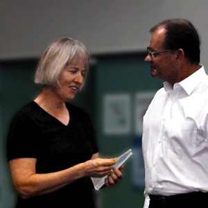
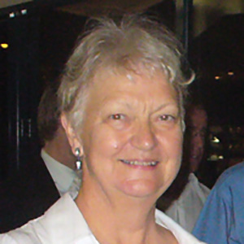

Alan Nixon
Alan has been Secretary of North Queensland Ensembles Inc. /Barrier Reef Orchestra for eight years. He is a former Commonwealth Government officer mainly in the Commonwealth Employment Service and prior to retirement he was the Department’s Zone Manager for North Queensland......
Carol Dall"Osto
Carol has been a leading figure in music performances in Townsville for many years despite living in Ingham until the early 2000s when she moved to Townsville. Carol is a piano teacher, accompanist, and musical director of the Australian Concerto and Vocal Competition which she has led since 1991.
Donna McMahon
Donna has been a leader in the Townsville music community since she arrived in 1973 fresh from the Conservatorium to teach strings for Education Queensland. Until 2009 she has also been involved with the Townsville Youth Orchestra, the Australian String Teachers’ Association, the Australian Concerto & Vocal Competition, and lately of course the Barrier Reef Orchestra.

Jacinta Payne
Jacinta has been part of the Orchestra from the beginning when she played 1st Clarinet at the first performance on Sunday, 29th October 2000. She has been on the management committee and was a voluntary manager of the Orchestra. Jacinta has had the task of being Rehearsal Conductor on many occasions and conducted a performance in 2004.

Jenny Carr
Jenny Carr came to Australia from Scotland in the early 70s and instantly became an integral part of the Townsville music scene as a pianist and instrumental music teacher. In 1998 when the decision was made to establish a community orchestra, Jenny worked as librarian, performer and for many years as Manager.

Stephen Frewen-Lord
Stephen has been involved with the Barrier Reef Orchestra since its inception; having played as concert master in the orchestra’s inaugural concert in 2000. Since then, he has missed only a couple of Barrier Reef Orchestra concerts, and has been concert master for most concerts.